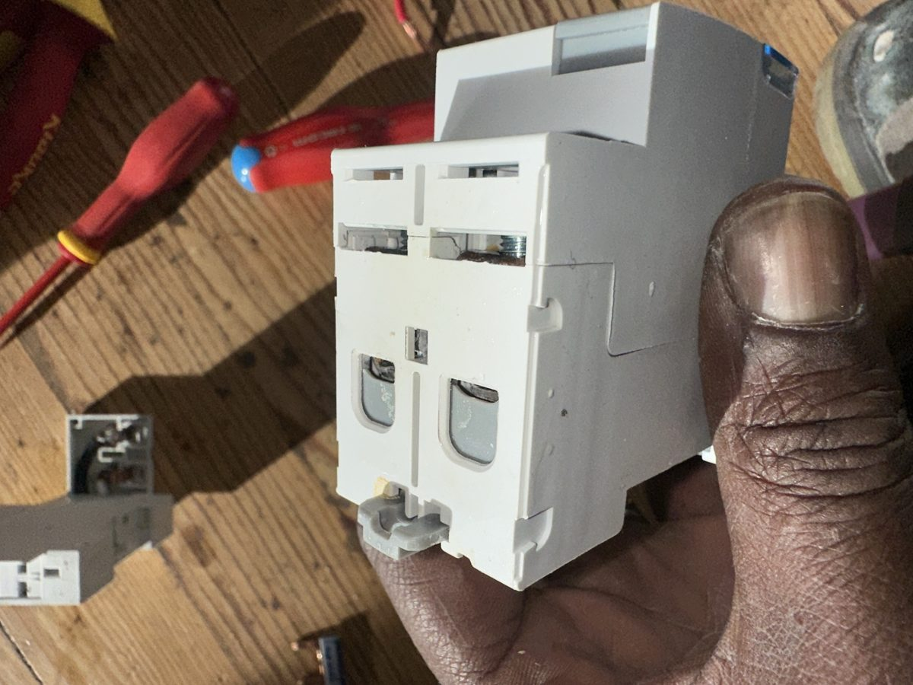
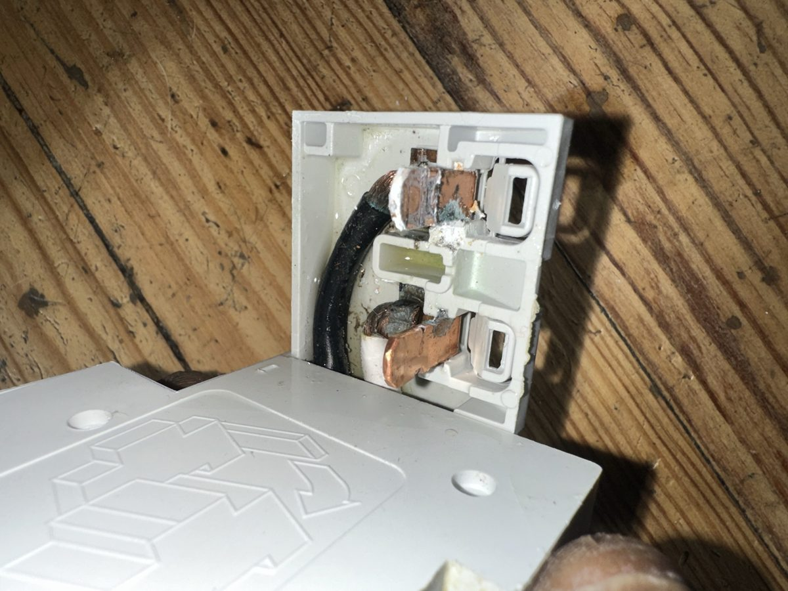
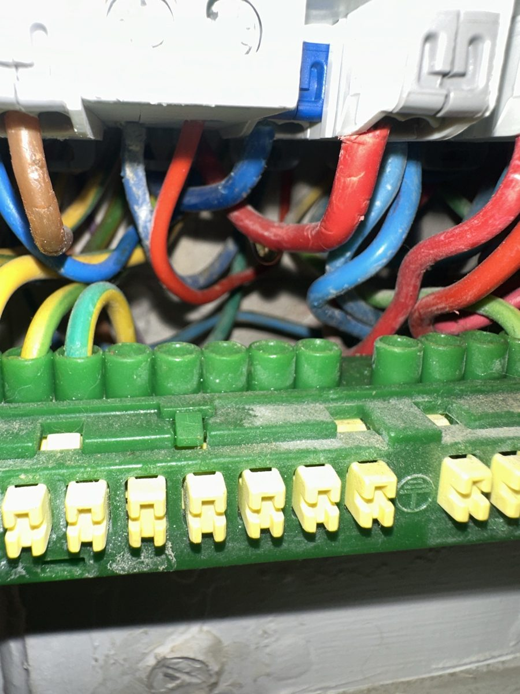

Une infiltration d'eau qui atteint le tableau électrique, un différentiel qui grésille ou qui disjoncte : l'eau et l'électricité ne font pas bon ménage, et le danger est bien réel (électrisation, court-circuit, départ de feu). Voici les bons réflexes, et un cas que nous venons de traiter à Paris 14e.
Un cas réel : fuite en toiture, différentiel qui grésille (Paris 14e)
Appartement au dernier étage d'un immeuble parisien. Une fuite en toiture de l'immeuble a laissé l'eau descendre par le plafond jusqu'au tableau électrique. Le client nous appelle parce que le différentiel grésille.
Sur place, nous démontons l'appareil. Verdict : les bornes sont oxydées et l'intérieur du boîtier est corrodé, avec des traces d'humidité. L'appareil n'est plus fiable et doit être remplacé immédiatement.


Nous avons remplacé l'appareil par un interrupteur différentiel bipolaire 63 A, 30 mA, type A, fourniture, pose et raccordement compris. L'intervention a duré environ 1 heure.

Pourquoi un différentiel grésille après une infiltration
L'humidité crée des chemins parasites entre les contacts de l'appareil. Elle provoque de l'oxydation, des micro-arcs (le grésillement) et des échauffements. Un différentiel abîmé de cette façon peut ne plus déclencher quand il le faut : c'est exactement le rôle de sécurité qu'il perd.
Les bons réflexes en cas d'infiltration près du tableau
- Ne touchez à rien si vous avez les pieds dans l'eau ou si le sol est mouillé près du tableau.
- Coupez le courant au disjoncteur général, seulement si vous pouvez l'atteindre à sec et sans risque.
- Ne réarmez pas un différentiel qui a sauté après une fuite d'eau, et ne cherchez pas à « tester » en le remettant.
- Si le tableau grésille, sent le brûlé ou fait des étincelles : sortez, coupez à l'extérieur si possible, et appelez les secours (18) en cas de fumée.
- Faites intervenir un électricien avant de remettre le courant.
N'oubliez pas l'assurance
Une infiltration est un dégât des eaux : prévenez votre assureur (le délai est en général de 5 jours ouvrés) et gardez les photos et la facture de l'électricien.
Combien coûte le remplacement d'un différentiel ?
Le remplacement d'un interrupteur différentiel 63 A type A, fourniture et pose comprises, est proposé à partir de 325 € TTC. Le prix peut évoluer si le câblage ou d'autres appareils du tableau électrique sont aussi abîmés : nous le vérifions sur place avant de commencer. Si la cause du déclenchement n'est pas évidente, une recherche de panne permet de la trouver.